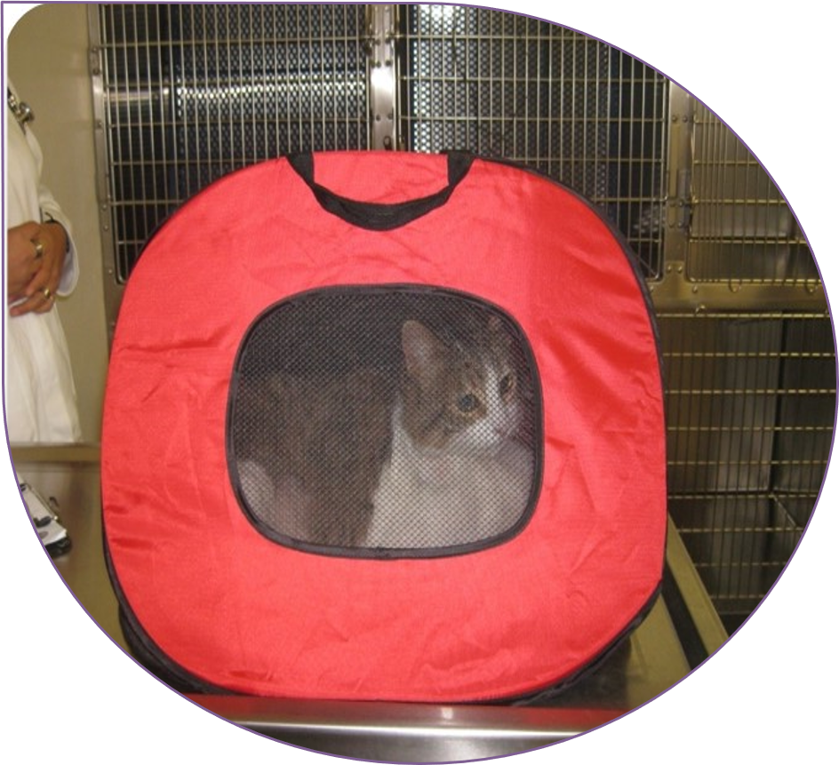
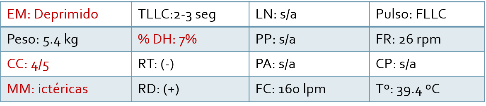

Reseña
- 1- Nombre: Anónimo
- 2- Especie: Felis silvestris catus
- 3- Raza: Europeo doméstico
- 4- Sexo: Macho castrado
- 5- Color: bicolor tabby café
- 6- Edad: 5 años

- Convive con otra gata (su hermana).
No sale de casa.
- Dieta: alimento comercial para gato adulto (croquetas).
Toma agua de la llave y se cambia cada 3 días.
- Medicina preventiva: vacuna contra rabia y trivalente, desparasitación interna y externa vigentes.
Remodelaron la cocina hace dos meses.
EXAMEN FÍSICO GENERAL

- Desde hace 2 meses presenta pérdida de peso.
- Desde hace 7 días presenta hiporexia..
- Desde hace 3 días presenta anorexia.
- Desde hace 2 días presenta depresión y mucosas amarillas..
- Nota: le han dado de comer forzado y vomita.